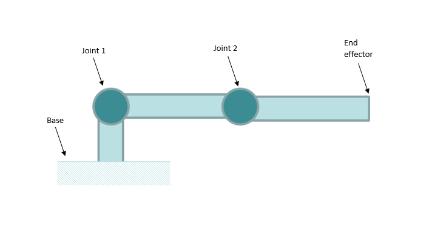

Generate Positioner Description¶
The description for a positioner requires the joint axis and centre for each joint in the positioning system. A model of the positioning system can be determined using measurements taken during robot motion and the description extract from the model. The process of generating a robot model from measurement is known as robot calibration. The instrument editor implements a calibration method known as circle point analysis.
Circle Point Analysis (CPA)¶
In CPA, all joints in the positioning system are kept stationary except one; points are measured from the path created by the motion of the single actuated joint. A revolute joint would create a circular path while a prismatic (translating) joint will plot a linear path. The measured path from each joint contains enough information to model the positioning system.
During the measurement, it is essential that other joints are not moving so that they do not contribute noise to the measurements. The positioning system should be placed in the zero or initial position although the manipulator could be placed in any position that simplifies the measurements. After each measurement, the joint should be returned to its default position, before the next joint’s path is measured. For a positioning system with N joints the measurements should be carried out as follows:
- Move the positioning system to it zero (home) position i.e. all joint set to zero or its equivalent.
- Set up measurement device in the same coordinate frame as the instrument and place a measuring target at the end effector (or sample holder) of the positioning system.
- The measurements should begin at joint 1, with joints 2,3,…N kept at their default positions.
- The active joint should be moved sequentially to n different uniformly spaced positions and measurement should be made at each position. n should be at least 3
- After measurement for the active joint is done, the joint should be returned to the zero position then steps 3 to 5 should be repeated for the next joint until the last joint is reached.
The range measurements from each joint can be adjusted to accommodate the measuring device or to avoid collision but it is recommended to measure at least half of the joint path.
Using the Calibration Tool¶
The points from the measurements described above should be written into a calibration file. The calibration file is a simple comma or space delimited text file with 7 columns of data. The first column is the joint index of the measurement (1 to N), the second, third, and fourth column should contain the X, Y and Z component respectively of the measured point, the fifth column should contain the offset at which each point was measured (in degrees for revolute joint), the sixth column should contain the joint type i.e revolute or prismatic and the last column should contain the zero or default offset. The file should not have a header and should be saved with a .txt or .csv extension. The text below shows the structure of the calibration data for a robot with only two revolute joints:
1 8.381966 1.175571 1.500000 108 revolute 0
1 8.097887 0.618034 1.500000 144 revolute 0
1 8.000000 0.000000 1.500000 180 revolute 0
2 10.000000 0.000000 1.500000 -180 revolute 0
2 10.048943 -0.309017 1.500000 -144 revolute 0
2 10.190983 -0.587785 1.500000 -108 revolute 0
To use the calibration tool, click Tool > Generate Robot Model in the main menu of the instrument editor. Select the desired calibration file in the file dialog and the calibration dialog will populate the joint types and home position information from the calibration file and provide text boxes for robot and joints names, and a custom order. Click the Generate Model button.
{kind=link}
When the calibration is complete, the calibration dialog will display the result pages which will show the model error (the difference between the actual measurement and measurements generated from the robot model) and the fitting error (the deviation of the measurements from a perfect circle or line). The errors can be filtered per joint which could be useful in finding which joint contributed the most error. The JSON description of the positioning system can now be copied to the clipboard by clicking that Copy Model button or export to a file by clicking the Export Model button.
{kind=link}
Two Link Example¶
Consider a simplified positioning system (illustrated below) with 2 revolute joints arranged such that the robot can only move in a plane.
{kind=link}
Joint 1 is the closest joint to the base and Joint 2 is the joint attached to joint 1. The end effector or sample holder would be linked with Joint 2. The robot is already in the zero position so the calibration measurements can proceed:
With Joint 2 in the zero position, move Joint 1 from -180 to 180 degrees in increment of 36 degrees at each stop the measuring device measures the target on the end effector. This would give 11 measurements for Joint 1, move Joint 1 back to its zero position. With Joint 1 in the zero position, move Joint 2 from -160 to 160 increment of 32 degrees at each stop the measuring device measures the target on the end effector, giving another 11 measurements.
The measured data is written into a calibration file which is available from the examples/calibration folder of the install directory. The calibration file can be loaded in the calibration tool as described above.
{kind=link}
Generating the model should yield zero errors because the data is artificially generated with no noise.
{kind=link}
Positioning Table Example¶
This example will be showing calibration of positioning table. The table has z stage, rotation stage, y stage and x stage arranged in the given order. The measurements proceed similar to the previous example, starting at the z stage and ending at the x stage. The measured data is available in a calibration file “table.txt” which can be found in the examples/calibration folder of the install directory (can also be download from the github repository). The calibration file can be loaded and model generated in the calibration tool as described above.
{kind=link}
The results show a good fit error for the prismatic joints and the single revolute joint but the model error reveals large errors in the y axis (Joint 3) which could be due to encoder errors or other mechanical along the axis. The average is still very reasonable for the model.